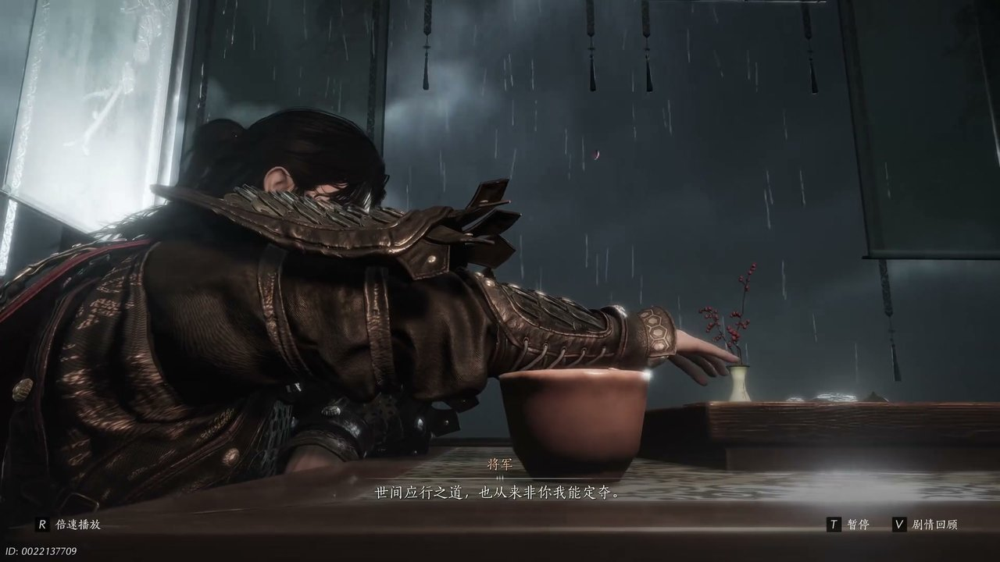
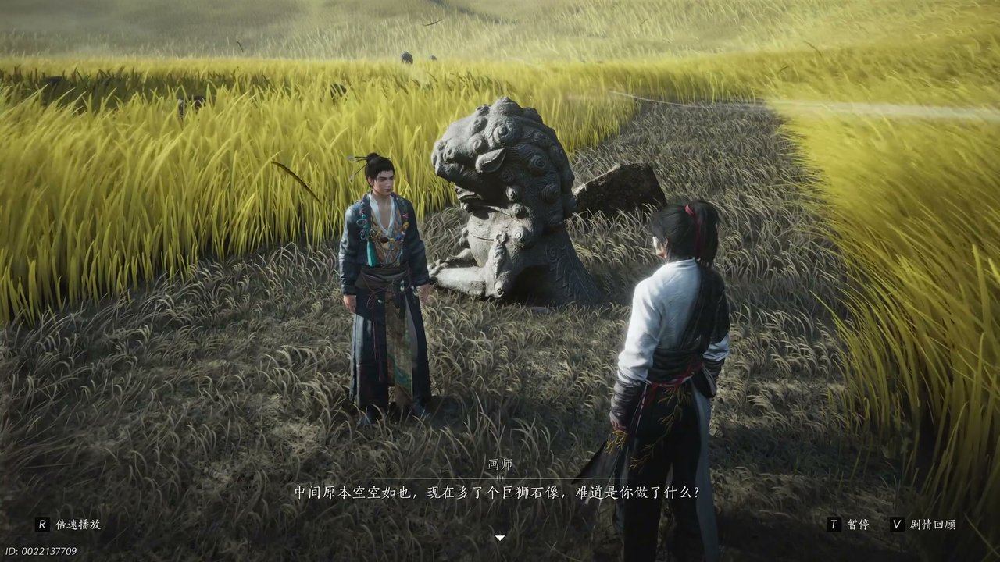
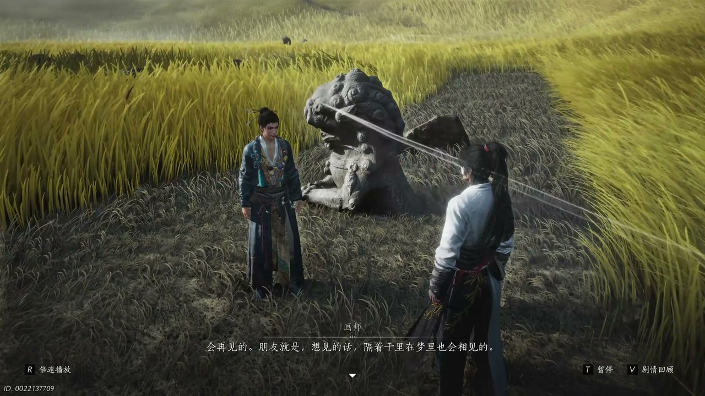
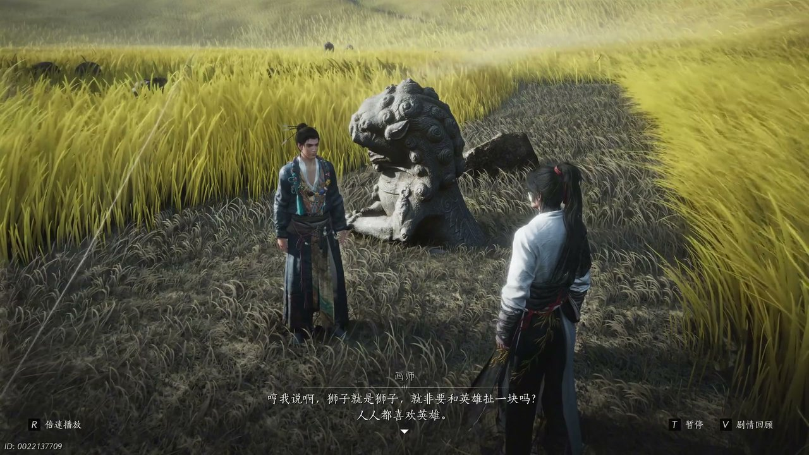
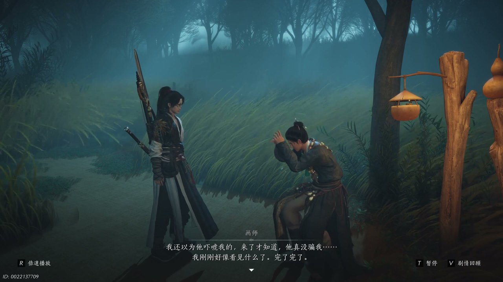
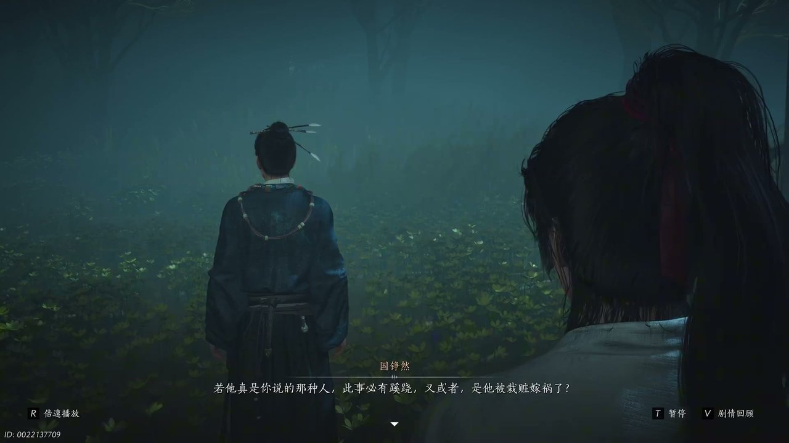

燕云背后的故事：第16集 秦川
燕云背后的故事：第16集 秦川

朋友们，上一集咱们说到——市井闹剧纠缠、边关谋划局势、江湖旧谊暗藏，凉州风波尚未尘埃落定。新来的朋友可能纳闷，神秘人赠予少东家鱼图后，秦川为何突然汇聚各方江湖势力。简单说，鱼图暗藏秦川隐秘玄机，牵扯出金桃秘宝与江湖各派的利益纷争，搅动整片秦川格局。可他哪知道，这场群雄汇聚的闹剧背后，藏着真假难辨的布局与舍身赴局的算计。这不，少东家与画师深入秦川腹地，初探秘境真相，各路江湖豪杰齐聚桃林塞，一场夺宝对峙大戏正式拉开帷幕。

昏暗肃杀的秘境之中，光影明暗交错，天地氛围凝重压抑，将军与王侯相对伫立，周身气场凛冽对峙。石壁纹路蜿蜒交错，映照着二人肃穆的神情，无声的博弈在空气里悄然蔓延。将军沉声开口，打破沉寂局势：“若不是害呢”，话音沉稳有力，带着不容置疑的决断。紧接着目光远眺，望向未知前路，缓缓说道：“直达，之间阴行之道，也从来被你我能定夺”。王侯闻言淡然回应，语气裹挟着宿命之感：“协幻界，道自成，无子可下”。他微微垂眸，轻叹一声补充道：“看来天意如此”。将军却并未顺从所谓天命，身姿挺拔目光坚定，直言：“放弃扭转天意之事，我也做得，更何况我还有一字”。二人言语交锋间，道尽朝堂与江湖的博弈纠葛，也暗示着秦川局势从不由天命主宰，皆由人心谋划。

秘境画面骤然切换，空旷的秘境中心空空荡荡，唯独浮现出一尊清晰的巨师实相，打破了此地原本的荒芜沉寂。画师驻足凝视着眼前异象，眉眼间满是诧异与疑惑，转头看向身侧的少东家，出声问询：“中间原本空空如矣，现在多了个巨师实相，难道是你做了什么”。少东家缓步上前，俯身观察地面纹路，指尖轻触石壁，缓缓开口解释：“这底下有木，我刚上来，不过这里的木并不是真正的”。他抬眸望向远方，目光掠过秘境深处，语气带着几分怅然：“血肉归葬于尘土，而是埋了很多重要的事，我甚至看到了我的几位朋友”。少东家细数所见景象，坦言本以为与友人短暂分离后再无相见机缘，未曾想竟能在此地再见故人踪迹，寥寥数语藏着重逢的唏嘘与世事的无常。

秘境清风缓缓拂过，吹动二人衣袂，温柔消解了几分周遭的肃冷。少东家望着秘境中浮现的友人残影，神色落寞，轻声感慨自己与友人相知甚少，此番重逢仿若一场短暂浮生。他坦言此地不仅埋葬着自己的友人，还藏着诸多无名之人的踪迹，这些人皆是对这片土地至关重要的存在。画师闻言面露释然，轻声劝慰道：“会再见的，朋友就是想见的话，可这千里，在梦里也会相见的”。少东家微微颔首，目光再次落回秘境深处，继续诉说所见，坦言深处还藏着无数无名女子的痕迹，应当是与友人一同长眠于此。画师听闻后恍然大悟，道出此地被世人称作英雄种的缘由，缓缓揭开这片秘境的隐秘过往。

光影流转，画师徐徐讲述起此地流传的民间异闻，昔年此地狂风呼啸，劲风猛烈到足以掀碎屋顶，肆虐四方。待狂风散去，荒芜草丛之中莫名浮现出一尊石狮，任凭狂风席卷，石狮始终屹立不动，甚至为一方生灵遮挡狂风。画师讲述完异闻，转头看向少东家，语气带着几分不解：“我说呀，狮子就是狮子，就非要和英雄扯一块吗”。他坦言风白曾言自己此生无灾无难、安稳安生，不必如石狮一般直面风雨。少东家闻言轻声反问：“你觉得他是真放下了，还是有点羡慕”。画师不以为然，直言石狮常年直面狂风碎石，饱受侵袭，毫无值得羡慕之处，还打算日后当面问询风白心中真实所想。

暮色渐沉，秘境氛围悄然变得诡异阴森，周遭光影忽明忽暗，暗藏未知凶险。画师紧跟在少东家身侧，脚步微微迟疑，神色带着几分忌惮与慌乱，一改方才从容模样。他想起风白此前的叮嘱，心中愈发忐忑，低声自语：“怪风白之前老跟我说这，什么进去就出不来，什么咬人叫枝头的狐狸”。画师坦言自己此前只当是恐吓，亲身抵达此地后才幡然醒悟，感慨道：“来了才知道，她真没骗我，我刚刚好像看见什么了”。少东家看着画师惊疑不定的模样，无奈打趣：“你这眼神，鬼飘过都不一定看得到吧”。画师无暇辩驳，满心惶恐，只盼能尽快离开这片诡异之地，言语间满是畏惧，也侧面印证了桃林塞秘境的凶险远超众人想象。

场景跳转，少东家复盘此前遭遇的掌力袭击，神色凝重，细细梳理疑点。他清晰感知到两记截然不同的掌力，一记击中凶器，一记落在后背，招式路数与古籍记载完全吻合，直指特定之人。少东家面色严肃，沉声说道：“这事儿便复杂了，我要去查查，如果真是她干的，那她可是杀人多宝”。画师听闻后立刻反驳，全然不信传言，笃定说道：“不可能，怎么可能，她才不是这样的人，她在乎的是天下云脉臭苗，连鸡腹蛋都能写三眼信给我，她才不在乎什么狗屁惊涛”。少东家冷静分析局势，缓缓说道：“若她真是你说的那种，此事必有其巧”。画师立刻接续话语，直言最大的可能便是对方遭人栽赃嫁祸，不解其为何要觊觎早已看淡的惊涛秘宝，二人就此展开探讨，愈发察觉整件夺宝风波疑点重重，暗藏阴谋。
这一集看下来，我最大的感受就是江湖纷争皆为假象，人心算计才是真局。上一集里我们只知道市井闹剧、边关谋局、江湖旧谊三条线索，到了这一集，我们看清秘境异象、天命博弈、金桃疑云三条核心线索。巨师实相浮现究竟预示着什么？被指觊觎惊涛的之人是否真的惨遭栽赃？桃林塞秘境的诡异传闻藏着何种真相？所有线索尽数收拢，秦川暗流彻底浮出水面，群雄汇聚只为争夺金桃秘宝，少东家深陷江湖朝堂交织的复杂棋局，全力探寻真相。下一集，各路江湖豪杰齐聚桃林塞对峙，方白现身直面群雄，掀起秦川终极纷争。你觉得这场夺宝风波的幕后推手是谁？风白的安稳余生究竟是真心放下还是刻意伪装？评论区留下你的猜想，点赞关注，下一集共看群雄对峙、金桃现世的高能剧情！
关于我们
📱 公众号名称：三天游戏
✍️ 作者：曾三天
扫码关注公众号，获取每日最新资讯

商务合作与版权
商务合作 / 内容投稿 / 品牌推广
请关注公众号「三天游戏」后台留言联系
版权声明：本文由作者整理，转载需注明出处。